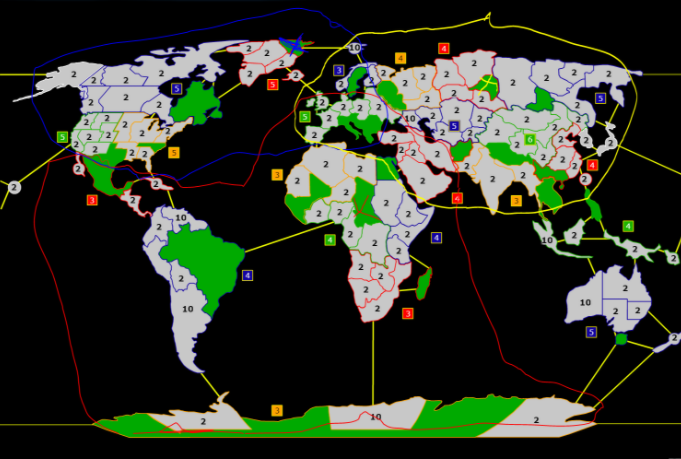
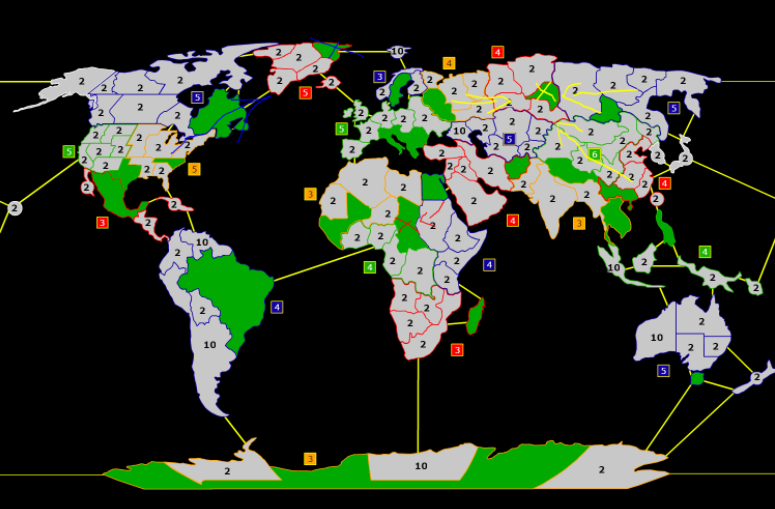
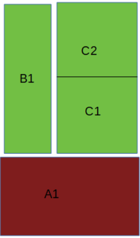

M'Hunters WarLight Strategy Guide
About This Guide
The goal of this guide is to formalize sound competitive WarLight / Warzone play. It covers 1v1 and team games but not FFA. Initially, this document was just a collection of forum posts by me in the M'Hunters clan internal forum, and this document is mainly a result of copying and pasting them to make them more accessible.
I believe that the basic building blocks of sound WarLight play can get formalized in a way that you can just turn your brain off, play by those simple rules, and get quite some results. I had to put some thought into how to formalize good WarLight play as I wrote bots for the game. In some way, those bots are just a collection of best practices stitched together, and the sum of those best practices leads them to play WarLight in a relatively sound way.
I have also made a YouTube video guiding you through the main topics of the guide: Strategy Guide Video
Efficient Expansion
Prerequisite: 0% luck straight round game, standard settings
Goal: Find out about good and bad amounts of armies to attack the opponent.
The formula for your kills is: "Attacking armies" * 0.6. The result is then rounded to the
closest natural number with .5 rounding up.
Let's assume you attack with X attacking armies:
- X = 1 → 1 * 0.6 = 0.6 → 1 (or 0 if the opponent only has 1 army there)
- X = 2 → 2 * 0.6 = 1.2 → 1
- X = 3 → 3 * 0.6 = 1.8 → 2
- X = 4 → 4 * 0.6 = 2.4 → 2
- X = 5 → 5 * 0.6 = 3 → 3
- X = 6 → 6 * 0.6 = 3.6 → 4
- X = 7 → 7 * 0.6 = 4.2 → 4
So in conclusion:
If you attack the opponent, for example with 4, you won't kill more armies than when attacking with 3. You might find a better use for that extra army. The problem is also that if the opponent deploys heavily there, you are putting 4 armies at risk instead of only 3.
If the opponent has more than 1 army on a territory, you can attack him with 1. That way you both lose exactly 1 army.
Expansion Move Order
Prerequisite: 0% luck straight round game, standard settings
Goal: Find out in what move order to perform your expansion steps.
Often when you take a territory, you assume that the opponent might also try to take the same territory in the same turn. If both you and your opponent use the same amount of armies to take the territory, it depends on the move order who gets it.
Case 1: Both you and your opponent attack the territory with a 3v2 attack.
Case 2: Both you and your opponent attack the territory with a 4v2 attack.
In Case 1, the player who moves first takes the territory, loses 1 army and has 2 armies remaining there. Then the player who moves second attacks those two armies with a 3v2 attack and takes the territory.
In Case 2, the player who moves first takes the territory, loses 1 army, and has 3 armies remaining there. Then the player who moves second attacks those 3 armies but only manages to kill 2 armies, so he won't take the territory.
So to sum things up:
- 3v2 expansion steps where the opponent might also attack should always be performed last order.
- If you really want a territory, then you might consider a 4v2 expansion step. In that case, you should attack the territory first order so a possible 4v3 attack by your opponent fails. However, if the opponent attacks you with 5, he will kill all your 3 armies there.
Attacks With 1
Prerequisite: 0% luck straight round game, standard settings
Goal: Find out about the advantages and disadvantages of attacking a big opponent stack with 1 army.
If you read the previous rules, then attacking a big stack with 1 makes both you and your opponent lose exactly 1 army. So what are the advantages/disadvantages?
Disadvantage 1: The opponent stack might move away before your attack with 1. In this case, you will lose your attacking army, and since the opponent only has 1 army there, they will lose nothing.
Disadvantage 2: It might get more likely for the opponent to break your territory. Let's assume the opponent has 5 armies there initially (so they can attack you with 4). You have 3 armies there. That way, they can't kill your 3 armies. But if you first attack him with 1, then you only have 2 remaining armies while they have 4 left (so can attack you with 3). 3 attacking armies are enough to kill 2.
Advantage 1: You get an extra move to delay a crucial attack of yours.
Advantage 2: You are disturbing a precise opponent calculation.
- Let's say the opponent has territory B, and B borders both your territories A and C. The opponent wants to take C and only deploys the minimum amount of armies to get a safe kill. In that case, you can attack from A to kill 1 army of your opponent so they won't get the kill.
- Let's say a bonus has the territories A, B, and C. You have A with 2 armies, the opponent has B with 1000 armies, and C is neutral with 2 armies. The opponent might try to attack you with 996 armies first order (in case you dodge) and take the neutral later order with a 3v2 attack. However, if you manage to hit him first order with a 1v1000 attack, they will then hit your armies still with 996 armies and will have only 2 remaining idle armies, so their attempt to take the bonus with a 2v2 attack fails.
Advantage 3: You might kill more armies if the opponent attacks you. Let's assume the opponent has a huge stack bordering a stack of 2 armies of yours. If you don't attack with 1, the opponent will only lose 1 army while you lose 2. However, if you first attack him with 1, then both you and your opponent will lose 2 armies.
Avoiding Random Picks
Goal: Find out how many picks you need to avoid random spots.
If both you and your opponent (or a teammate) go for the same pick, obviously only one of you can get it. Because you might lose your main picks, you need backup picks to avoid random spots. This raises a couple of questions. One of them is how many picks you need in total.
The easiest formula is:
"Amount of needed picks" = "Amount of starting spots per player" * "Amount of players in game"
This formula is true for all game types (1v1, team games, FFA).
However, in team games, you might decide to pick other spots than your teammates. In that case, you need fewer backup picks, and the formula is then:
"Amount of needed picks" = "Amount of starting spots per player" * "Amount of players in game" -
"Amount of your teammates" * "Amount of starting spots per player"
This formula is true since your teammates won't steal your picks in this scenario.
Examples:
- Example 1: 1v1 against your opponent with 3 starting spots: You need
3 * 2 = 6 picks. - Example 2: 3v3 team game with 4 starting spots and overlapping picks: You need
4 * 6 = 24 picks. - Example 3: 3v3 team game with 4 starting spots and non-overlapping picks: You need
4 * 6 - 4 * 2 = 16 picks.
Possible Pick Combinations
Prerequisite: 1v1 game
Goal: Find out about the possible combinations of your picks with which you might end up.
The pick order works just as the move order. There is an option called "no luck cycle" where the player who commits faster gets their first pick. However, usually, it's random. Let's assume Player 1 goes first. Also, assume that there are 3 starting spots for each player. The picks are then allocated in what I call "rounds" while each round the players alternate.
- Round 1: Player 1 - Player 2
- Round 2: Player 2 - Player 1
- Round 3: Player 1 - Player 2
After round 3, both players have their 3 starting spots. As I point out in Lesson: Avoiding random picks, both players need 6 picks when there are 3 starting spots. However, you can't end up with every combination of your picks. If you ended up with your picks 4, 5, and 6, this would mean that your opponent stole your picks 1, 2, and 3. Let us analyze this:
Round 1: The opponent goes first and steals your pick 1. Then it's your turn, and you get your next highest-ranked pick, which is 2. This means that the opponent can't steal both your 1 and 2.
Possible combinations for 1v1 and 3 spots (Autogame / Ladder settings):
- 123 1st/2nd
- 124 1st/2nd
- 125 1st/2nd
- 126 2nd
- 134 1st/2nd
- 135 1st/2nd
- 136 2nd
- 145 1st
- 234 2nd
- 235 2nd
- 236 2nd
1st / 2nd hereby means that you moved first or second during the picking stage.
There is some interesting information about these combinations:
- You can't lose both your picks 1 and 2.
- Getting your pick 6 means that you both lost your picks 4 and 5.
- If you get your pick 6, this means that you either ended up with 126, 136, or 236. When it's 126, this means that your opponent has your picks 345. This is often the case when there is a triple-pick, and you check with your 345 if the opponent picked there. However, if you don't check a triple-pick, it's very likely that when you get your number 6, you also ended up with your number 3.
For the possible pick combination in case of an arbitrary amount of starting spots, see Possible Pick Combinations
Board Dependent Moves
Goal: Finding out how to play "Transfer only," "Attack only," "Attack by percentage," and "Marking armies as used"
All those mentioned moves have one thing in common: you use them if you don't know how the board will look when the move gets executed (or not executed).
If you use Attack-or-Transfer only, then your current play is that you look at the board and play
accordingly. This is also how the AI plays: it always attacks when "AI armies after deployment" >=
"Your stack at beginning of turn" * 2. However, you shouldn’t follow the AI here. Instead, you
should have a model in your mind about how the board will look like when your moves get executed. If this is
your approach, then you will find many circumstances where you don't want to go with the default Attack-or-Transfer.
Transfer Only
You mainly want to use Transfer only when you are afraid of running into a bigger opponent stack. Let's say 11 territories are all bordering each other. The opponent holds 1 territory with 100 armies, and you hold 10 with 10 armies each. This is a bad situation for you, so you want to join your stacks in region A. However, if the opponent attacks A first turn full force, then you will crush 9 times into their stack in A, giving you 9 bad fights.
Attack Only
Attack only mainly comes into play when you are playing defense. Let's say the opponent has a stack that is bordering your territories A and B. A is part of your bonus, while B isn't, but B has multiple borders to your bonus. You don't know whether they will hit your bonus directly or flank it via B. In that case, you can deploy in A and use a late order Attack only from A to B in case your opponent went for the flanking option.
Attack By Percentage
Attack by percentage comes into play when you don't know how many armies you will have when your move gets executed. This is only the case when your opponent attacks your territory. In all other cases, you can achieve the same with a regular attack. Attacking by percentage is useful when you want to hold some armies back, for example, to blockade the territory.
Let's say you have 11 armies in region A. You want to attack region B with 5 armies and use the remaining 6 armies to blockade A at the end of the round. Before you move from A to B, the opponent attacks A and kills a total of 4 armies.
Case 1 - You don't use attack by percentage:
After the opponent's attack, you have 7 armies left. You move 5 and end up blockading A with 2 armies.
Case 2 - You use attack by percentage:
After the opponent's attack, you have 7 armies left. You move 50% (= 3 armies) and blockade with 4 armies.
Conclusion: You want to use attack by percentage if you care more about how many armies remain than with how many armies you attack. If the opponent attacks you, then attacking by percentage has the effect that more armies remain while your own attack gets smaller.
Attack By Percentage For conditional Delays
You want to use attack by percentage for conditional delays if you find yourself in the following situation:
You are planning on hitting a stack of your opponent with your own stack. If the opponent hits your stack first, you want to hit him later with your whole remaining stack. However, if the opponent does not hit your stack first, you want to cram in some additional delays by moving armies of 1 away from your stack.
The solution here is to move those armies of 1 via attack by percentage, setting the percentage so that the move barely rounds to ≥ 0.5. Only moves that move more than ≥ 0.5 armies get executed, while the other moves round to 0. An attack by percentage that rounds to 0 neither gets executed nor marks any armies as used, so you can use all your remaining armies for your big attack.
As an example, let's look at turn 9 of the following game: https://www.warzone.com/MultiPlayer?GameID=13572606
The dark blue player here almost managed to wipe teal from the east and thus most likely win the game. However, he failed with teal having only 1 army left. Not knowing how many delays were exactly needed, the dark blue player added many unnecessary delays far outdelaying teal. If he had used attack by percentage for those delay moves, he would have been able to hit teal stronger.
Mark Armies As Used
Let's look at the same example as before and see if we can find a better way to blockade with exactly 6 armies (prio A) while attacking region B with 5 armies (prio B).
Step 1: Mark 5 armies in territory A as used.
Step 2: Attack territory B with 5 armies. If the opponent has attacked us before, we won't attack him with armies that have already been marked as used.
Those steps explain the "what," but not the "how" to mark armies as used. The way to do this is by using them for a move that can't get executed. There are two ways to do this:
- Do an attack only to a friendly territory.
- Do a transfer only to a territory that isn't friendly.
Despite such moves not getting executed, the WarLight game mechanics forbid using the same armies multiple times, so those moves mark the armies as used.
Income / Costs Ratio
Goal: Finding out about efficient bonuses.
When checking the WarLight forums, you will find the terms "Income / neutrals ratio" or "Income / territory ratio" to describe the efficiency of a bonus. Both ratios help to give a quick overview, but I'd rather think in terms of cost for the following reasons:
Income / territory ratio:
- Wastelanded bonuses don't get punished.
Income / neutrals ratio:
- Infinite value in 0 neutral games.
- Infinite value of a 1 income - 1 territory bonus during the picking stage (you picking there removes all neutrals).
- Double value of a bonus where all neutrals are 1 compared to the same bonus with the exception that the neutrals are 2. However, both 1 and 2 defending neutral armies kill 1 of your attacking armies.
I recommend seeing the cost of taking a bonus as "Amount of territories" + "Neutral kills"
in case of 1 army must stand guard and as Cost = Neutral kills in case 0 armies must stand
guard.
Deployment Order
Goal: Finding out in which order to deploy your armies.
When playing, you want to have as much information as possible about your opponent while giving him as little information as possible. An often neglected aspect of information you are exposing is the order in which you deploy your armies.
This is how the game mechanics work: The way the deployment orders get executed works the same as the move orders get executed, and the player who gets first move order also gets first deployment order.
There are two possible ways to deploy your armies:
- Option 1: First deploy next to your opponent, then deploy where you aren't bordering him.
- Option 2: First deploy where you aren't bordering your opponent, then deploy next to him.
The disadvantage of Option 2 is:
- When you first deploy in the background, you are giving the opponent the intelligence that you haven't deployed all at their border (so you have more income).
- Also, calculating the number of times you deployed in the background can give your opponent valuable information.
By default, Option 1 is the way to go, so you want to first deploy next to your opponent and afterward in the background. Also, you want to watch closely what your opponent reveals with their deployment order.
Here is an example about intelligence your opponent might give you when deploying as in Option 2:
You are playing a Strategic 1v1 game and are asking yourself if your opponent took South America or Southeast Asia. They did take South America, deployed 8 at your border, 1 in the background, and moved first:
- Opponent deploys 1 in the background.
- You deploy something to a spot.
- You deploy something to another spot.
- Opponent deploys 8 at your border.
→ You know that the opponent has more than 8 income, so they probably took South America.
Aggressive Late Order Play
Goal: Play more aggressively when you know you get last order.
Let's assume the game has opened up and both you and your opponent are bordering multiple important spots of each other. You don't know where your opponent will focus on. In such a situation, you should play with very aggressive last order attacks.
Let's assume you are bordering the opponent in your territory A and the opponent's territory B (amongst probably many other spots). You want to break B but are afraid to run into a bigger stack than yours, and the opponent might also attack you from B. Let's assume you have 24 armies (attack with 23) and the opponent has 28 armies (attack with 27).
Case 1: First your attack happens, and then the opponent attacks.
Initial:
- Opponent: 28
- You: 24
Situation after your attack:
- Opponent kills: 20
- Own kills: 14
- Opponent: 14
- You: 4
Situation after opponent attack:
- Opponent kills: 24 (20 + 4)
- Own kills: 17 (14 + 3)
- The opponent kills 7 armies more and also takes your territory, which probably hurts most.
Case 2: First the opponent attacks, and then your attack happens.
Initial:
- Opponent: 28
- You: 24
Situation after opponent attack:
- Opponent kills: 16
- Own kills: 17
- Opponent: 11
- You: 8
Situation after your attack:
- Opponent kills: 23 (16 + your 7 attacking armies)
- Own kills: 21 (17 + 4)
- Opponent: 7
- You: 1
So the opponent only kills 6 armies more and won't take the territory.
As you see, running into a bigger opponent stack is still a bad thing, even if you get last order. However, it's not as bad as when you don't get last order.
Do Not Expand By Default
Goal: When you are having a couple of leftovers, you might want to use them for an "unplanned" expansion step that you might not have done without those armies. However, this is very often not a good decision.
Let's say you have 3 leftovers in a territory and can use them to just randomly attack a neutral territory in a bonus that you might get in a couple of turns. This is usually a bad decision, and you have to ask yourself a couple of questions before doing so:
- Question 1: Are you planning on meeting your opponent soon? Can you then continue your expansion?
- Question 2: If there are reinforcement card pieces, and you are already taking a territory this turn, then is it possible that after a couple of turns you might have problems taking a territory since the opponent is pressuring you, and you need your armies for defense?
- Question 3: Those 3 leftovers give you a total of 3 delay moves. If you attack that territory, you only end up with 1 leftover, so you lose 2 possible delay moves. Is that a possible problem? (Hint: It usually is!)
- Question 4: Neutrals are "neutral" and the opponent is your "enemy." Can you use those armies to kill him instead?
Fighting > Expanding
Prerequisite: 2 neutral game
Goal: Often you have the option to either gain your own bonus via expansion or to break an opponent's bonus. The latter is better.
Let's assume you have the option to either take a +3 bonus or to break a +3 bonus of your opponent.
There are some benefits of breaking your opponent instead of expanding:
- Benefit 1: With the break, you also kill more opponent armies than you lose. However, when you expand, you initially lose armies fighting neutrals.
- Benefit 2: When you break your opponent's bonus, the situation isn't over yet. You have a huge stack in your opponent's bonus and can often threaten to take the bonus completely over or use those armies to break another bonus of your opponent. He then has to start guessing (Will he attack A or B, or maybe take over my bonus instead...?).
- Benefit 3: By deploying to the fighting spots, you ensure that you keep the upper hand. If the opponent deploys there, and you do not, then he can gain ground.
- Benefit 4: A disadvantage of going for the expansion option is that you become more vulnerable since the opponent might try to attack the bonus you took. If you didn't take the bonus, then there is nothing for your opponent to attack—plain and simple.
- Benefit 5: You are binding the opponent. Without your attacks, he is capable of trying out other strategies, such as out-expanding you or showing up at your own bonuses. However, if you keep him busy, his hands are more tied.
Offense > Defense
Goal: You want to be on the offense, not on the defense.
With offense/defense, I mean whether you are threatening your opponent (offense) or the opponent is threatening you (defense). There are 3 possible combinations:
- You = offense, opponent = defense
- You = defense, opponent = offense
- You = offense + defense, opponent = offense + defense
One of the most important parts of my gameplay is that I always try to be on the offense instead of on the defense. Of course, there is also the aspect of out-predicting your opponent. However, this only works when there are flaws in your opponent's play on which you can build your own strategy. It's best to never get into a situation where you need to out-predict your opponent.
There are many problems with being on the defense (and vice versa, benefits of being on the offense):
- Problem 1: If an opponent stack borders your bonus in multiple ways, you have to guess where he will attack. A wrong guess is a huge problem, while the opponent guessing your defense wrong isn't that big of a problem.
- Problem 2: If the opponent has the initiative, he can outplay you. For example, if they border an important bonus of yours, they can decide not to attack you but instead expand themselves while you need to deploy there. They might even dodge a possible attack of yours with minimal deployment, and next turn, they can again decide whether to attack you or just keep expanding.
There are a couple of rules that you can follow to ensure you are on the offense and not on the defense:
- Rule 1: Don't cluster-pick. If you cluster-picked, the best thing to happen is that your opponent also cluster-picked the same bonus. In this case, you are both on offense + defense, and it's a fair fight (Never get into a fair fight!). However, if the opponent only has 1 spot in or next to your cluster-pick, they can be on full offense while you are just defending.
- Rule 2: Carry the fight to your opponent. If you don't show up at your opponent's border, the opponent will show up at your border.
Play For The Team
Prerequisite: Team game
Goal: You win as a team and lose as a team. There is probably no correlation between playing strength and your income position at the end of the game compared to your teammates.
I guess the biggest reason players go for a cluster-pick on the Rise of Rome map isn't to get a mega-bonus faster but to avoid running into multiple opponents from the start. If you are really going for a team victory, this is a terrible reason to cluster-pick.
The formula for when it is a good thing to run into multiple opponents is:
"Damage that you are doing" > "Damage that the opponents are doing to you"
"Damage" here is an abstract concept that involves all kinds of factors like:
- Broken bonuses
- Killed armies
- You help your teammate gain the upper hand
- You stall the expansion of your opponents
- …
If you are just looking at the first two factors (Broken bonuses and Killed armies), running into two opponents is usually a bad thing. However, there are such huge other benefits to running into multiple opponents that (if you pick and play correctly) it is usually a very good thing. You should be capable of being on the offense for a couple of turns, or at least not just defending. The worst mistake in such a situation is to expand.
Look at the following game with me playing with random teammates: https://www.warlight.net/MultiPlayer?GameID=8113103
Since I saw the rather nonsensical Partha cluster-pick and I know that "Partha only" loses to "Partha + Asia only," I decided to pick Alexandria and hit Asia as soon as possible. I also ran into an opponent in Macedonia. At first glance, I didn't do that much damage to the player in Asia, and me fighting him also would have led to a long-term defeat against the player in Macedonia. However, me showing up in Asia was enough to give the Partha player (who would have lost otherwise) a very easy win against the Asia player. A little help from me shifted the game towards a team victory.
Analyze
Goal: You want to analyze the game while it is going on and also after it has already finished.
Here is some advice:
- Don't play multiple real-time games at a time but completely focus on one game.
- Don't play a 5-minute game as a 1- or 2-minute game.
- Don't use the "Skip to End" button.
During the game, you have to be fully aware of what is going on:
- What bonuses does the opponent have?
- When will the opponent get their next reinforcement card?
- Why didn't the opponent deploy all their income at your border? What are they doing with the missing armies?
- How many orders do you need to out-delay your opponent?
- How is it possible that the opponent showed up with a stack of 5 at your border on turn 2? Weren't they expanding?
- Is your current strategy successful, or is the opponent outplaying you by playing a counter-strategy?
- What is your opponent thinking? What is your opponent thinking that you are thinking?
Use your calculator to keep calculating stuff. For example, you have about a 50% chance for three 80% attacks to all succeed. Also, if you know your opponent's income, you can just deploy the minimum amount of armies to avoid getting broken.
Also, after the game you have to analyze:
- Could the opponent have won this game at a certain point if they had played it better?
- Why did you lose this game? Was it due to lucky predictions of your opponent? What did you do wrong? What did the opponent do better?
In the following video I show how to remove the fog in 1v1 games: WarLight - how to remove the fog.
First Turn Bonus Play
Goal: You took a first turn bonus. Therefore, you had to use 2-3 picks (Autogame settings). What now?
First of all, putting all picks into one area is problematic, as I point out in Lesson: Offense > Defense.
You going for the first turn bonus (by probably putting all 3 spots into one area) has some advantages:
- Advantage 1: You get a higher initial income after the first turn.
- Advantage 2: After the first turn, you have quite a high amount of armies floating around the bonus that you clustered.
The disadvantages are, however:
- Disadvantage 1: If the opponent is nearby and threatens you, you risk a swift defeat.
- Disadvantage 2: Since your opponent was covering the good parts of the map while you are stuck in one area, they will probably be capable of expanding faster than you.
- Disadvantage 3: You lack information about your opponent, while they probably know quite well where you are.
- Disadvantage 4: If the first turn bonus is obvious, you risk a strong counter-play directed directly at your strategy.
Those advantages and disadvantages should make it quite obvious that there is only one sound way to play a first turn bonus:
- Step 1: Take the first turn bonus.
- Step 2: Kill your opponent with your initial momentum.
So, if you manage to play "Ultra offense" with your first turn bonus instead of "defense," you don't violate my advice "Offense > Defense."
Working Armies
Goal: Armies are like money. You want to work with them instead of putting them under your pillow.
The term "working armies" needs a definition. I define working armies as armies that you are putting to use this turn, more precisely:
- Armies from a reinforcement card that you aren't playing this turn aren't working.
- Armies that are standing still (without defending) aren't working.
- Armies that you use marching strongly towards the opponent aren't working.
- Armies you are using to feed a teammate aren't working.
However:
- Armies used for order delay moves are working.
- All armies next to the opponent are always working.
- All armies used for expansion are working.
As a rule, you want each and every army to work. Only in well-defined exceptions might you consider playing with non-working armies.
Possible exceptions:
- Possible exception 1: You don't play a reinforcement card this turn to have more initiative next turn.
- Possible exception 2: You build a huge stack before meeting your opponent since otherwise you wouldn't have enough income to break him.
- Possible exception 3: You stack in the background because you can't defend your front.
- Possible exception 4: You stack in the background to trick your opponent into running into a big stack.
The part I'm mostly interested in is "Possible exception 2" since I often see gameplay that looks like this exception but is, in fact, rather nonsensical. This can have various reasons:
- In a team game, the player building this huge stack already has a big enough income advantage that they could hit their opponent without needing their initial stack.
- The player builds this huge stack but as they meet their opponent, they aren't again deploying to this stack but are expanding instead (a huge mistake, especially in Rise of Rome team games).
Relative Safety
Goal: Finding out about safety and how to make your income safe.
Mostly there isn't any "real" safety for you. There is fog, and theoretically, the opponent can be almost everywhere. However, practically, there is some relative safety, and during the picking stage, you can build your own safety zones.
With relative safety, you assume that your opponent didn't go for a badass counter-pick but picked normally.
Look at the board of the following game between Renegade and UniVersal: https://www.warlight.net/MultiPlayer?GameID=8065702
If you got a spot in Indonesia after picks, then there was no way for your opponent to be close. Indonesia was safe on its own.
Scandinavia isn't safe on its own. If the opponent sits in West Russia, they can attack you. However, you can make Scandinavia safe by also picking West Russia. If you got West Russia, then you know you can safely expand in Scandinavia, and if you haven't, then you know that you aren't safe at all.
Relative safety is especially important during the following stages:
- Picking stage: You can make bonuses safe by picking neighboring bonuses.
- Start of the game: You want to start by expanding in your safest bonus. If you don't, and the opponent is nearby and has expanded in a safe bonus, then this often results in losing the game.
The "Norman Way" Of Thinking About Picks
Goal: This advice aims at giving you an easily comprehensible explanation about how the creator of this guide evaluates a picking outcome.
I introduced the following 4 terms to explain to my clanmates what I think about their picking outcomes:
- Bonus coverage: A pick covers a bonus if you can border that bonus within 2 steps from the bonus containing the pick.
- Map coverage: Map coverage is defined as having bonus coverage over all reasonable possible opponent bonuses.
- Clustered pick: Two picks are clustered if there is a reasonable opponent pick in between which has bonus coverage over both bonuses containing those picks.
- Hope play pick: A hope play pick is a pick where you don’t know from which direction to expect your opponent to come from after you took the containing bonus.
Advantageous neighbor: Each bonus A has some neighboring bonuses X, Y, Z, ... X is advantageous over A if, when one player has A and their opponent has X, then the player having X has some sort of advantage. This means mostly one of the following:
- A has a double border to X, but X has only a single border to A.
- A is bigger than X.
Advantageous distant neighbors: You want to extend the advantageous neighbor definition to bonuses that have bonus coverage over your bonus (and vice versa, of course).
Regarding bonus coverage and map coverage, I found the 2 steps to reach the opponent bonus as quite reasonable for defining bonus coverage when it comes to 1v1 ladder settings.
- If the picks are more scarce than usual, you want to use a bigger number than 2.
- If the picks are more packed than usual, you probably want to use 1 step instead of 2.
Generally speaking, you want to spread out your picks in order to get full map coverage, so there is no opponent bonus out of reach.
The following graphic helps you to understand bonus coverage:
The ‘x’ markers represent your 2 pick outcomes, and the surrounding circles show which bonuses are covered by those picks. Since the wasteland in Scandinavian Peninsula blocks your path towards West Russia, the pick in Greenland does not cover West Russia. Also, I accepted here the West African pick covering Central America; however, then again, you have to pass a +4 on the way and a wastelanded South America, so it’s pretty much a “meh” coverage.
As you can see from the circles, we have bonus coverage over all reasonable opponent bonuses, so we have full map coverage.
The following graphic shows you the same picking outcomes from the hope play perspective:
Why Attackers Should Flank And Defenders Should Defend Their Bonus
Goal: I cover a very difficult topic here; however, even if you don’t understand everything, it should enhance your understanding of optimal WarLight play.
I asked my clanmates in our clan forum for a solution to the following riddle:
The Riddle
The players are named “Red” and “Green” and own the territories according to the colors of the graphic.
If Red manages to break the bonus C within 2 turns, he wins. Else Green wins.
For simplicity, we are assuming no split mode. Also, Green has enough income to defend 1 territory and not 2. No fancy moves allowed, just 1 badaboom hit, either into a wall or into an unprotected territory.
We are only interested in turn 1:
- If Red breaks C1, he immediately wins.
- If Red flanks to B1, we assume a 50% chance of him choosing turn 2 correctly and thus winning the game.
Both Red and Green are WarLight bots. Their default behavior is to play in an immaculate way. However, if they realize a flaw in their opponent's algorithm, they exploit it. Both bots are capable of reading the source code of the other bot.
I have 2 questions:
- What is Green's immaculate decision of which Red can’t take advantage?
- What is Red's immaculate decision of which Green can’t take advantage?
As for the answer, I expect something like the following:
Green has to defend B1 10% of the time and C1 90% of the time.
Red has to attack B1 100% of the time and C1 0% of the time.
The percentages above are just random numbers adding up to 100%. Your task is to find the correct numbers.
The Solution
Breaking C1 has double the value of breaking B1 since when you break B1, you still have a 50% chance of
messing it up. That’s why we have to solve 2 * B1 = C1, which boils down to a 33% to 66% ratio.
Green has to defend B1 33% of the time and C1 66% of the time.
Red has to attack B1 66% of the time and C1 33% of the time.
If both players play optimally, the attacker has a 33% chance of breaking the bonus.
Now let’s make some examples where one of the bots plays imperfectly and the other bot abuses him:
- If the defender throws a 50/50 dice on whether to defend B1 or C1, the attacker can always attack C1. This gives him a 50% chance of winning.
- If the defender always defends C1, then the attacker can always attack B1. This also gives him a 50% chance of winning.
- If the attacker instead hits C1 instead of B1 66% of the time, the defender can abuse this by always
defending C1. Then the attacker only ends up with a
33% * 50% = 16.5%chance of winning the game.
General Takeaways
As for myself, I find the results extremely fascinating. The actual numbers of this simplified example don’t apply to WarLight, but we can extract some general rules which do apply. With great caution according to your particular game, you can (to some extent) extract the following rules:
- If you are the attacker, you should prefer flanking, while if you are the defender, you should prefer defending your bonus.
- If you border 2 opponent bonuses, prefer to attack the less important one. However, if you find yourself as the defender here, prefer to defend the more important one.
And more generally: The defender usually wins in a symmetric situation, and the attacker in an asymmetric situation. By this I mean that the defender wins if both players choose the same territory to focus on, while the attacker wins if both players choose different territories.
If you find yourself winning in a symmetric situation, you want to prefer the option which gives you more value, and if you find yourself winning in an asymmetric situation, you want to prefer the option which gives you less value.
Dirty Gifting
Prerequisite: Team game, gift card enabled
Goal: Finding out about gifting stuff to your opponent
By default, "Attack teammates" is set to false. Therefore, when an opponent attacks a territory that you are gifting the same turn to one of their teammates, instead of an attack, a transfer order will happen and the other opponent will get those armies.
There are some common examples when this is beneficial:
- Example 1: By killing you in an important bonus, the opponent will also completely take the bonus over.
- Example 2: The attacking opponent has superior income, but so far he isn't really coming into play. If you then gift the attacked territory to an opponent with inferior income, you might be able to take the attacking player with superior income out of the game for a while longer.
- Example 3: The plan of the attacking player is to crush your income source (for example, he is running for Parthian Empire). Before he arrives, you might then find a situation where you can gift an attacked territory to an opponent who doesn't have the capability of really deploying strongly against you.
- Example 4: If you can't get card pieces otherwise, you can gift to your opponent and then immediately attack the gifted territory.
Appending: Game Mechanics
This section explains some of the different game mechanics in a concise manner. The goal isn’t to give a complete overview but mainly to explain some mechanics which even experienced players often don’t know exactly about.
This guide uses the following conventions:
- Turn: A turn is a classic WarLight turn which gets executed after all players have committed their moves.
- Round: A turn consists of multiple rounds. During a round, a maximum of 1 move of each of the players gets executed and exactly 1 move, as long as all the players have moves left.
Move Orders
There are 3 types of move order settings:
- Random: The move order gets decided randomly each turn.
- Cycle: The move order gets randomly decided at the start of the game and then cycles each turn.
- No luck cycle: The player who plays their first turn fastest (/picks fastest) moves first during the first turn (/during the picking stage), and then it cycles from there. In team games, the slowest overall player decides which team moves second.
With all of these settings, the move order cycles each round.
Example no luck cycle, team game with the following picking speeds:
- Team A:
- Player A1: 1 minute
- Player A2: 4 minutes
- Team B:
- Player B1: 2 minutes
- Player B2: 3 minutes
During picks the cycle is then:
- Round 1: B1, A1, A2, B2
- Round 2: B2, A2, A1, B1
- Round 3: same as round 1
First turn then the cycle swaps, so player B2 moves first and player B1 last. Since the player moving last in round 1 always moves first in round 2, they get 2 successive moves, which can be beneficial.
Move Orders With Order Priority And Order Delay
Both the order priority and order delay cards affect the round in which moves get executed.
Playing order priority cards introduces the new rounds O1, O2,...On, depending on the number of order priority cards played. O1 is executed before the regular round 1, O2 before O1, and so on. Each played order priority card in a certain turn pushes the first order one step higher into the O rounds. Since the first order no longer exists in the regular rounds, all other orders move 1 round up. However, when playing multiple order priority cards, they don’t move up any further. The cycle in the O rounds is the same as the cycle in the regular first round.
Let’s say, for example, that player A is moving before player B in the cycle. If both player A and player B play an order priority card, then the first order of player A gets executed before the first order of player B. However, if player B truly wants the first order, they can play 2 order priority cards.
Playing order delay cards introduces the new… let’s call them “sequence of rounds.” Let’s call the standard round sequence without any order delay cards involved the “standard sequence,” and each order delay card then adds the “OD sequence n” for the nth played order delay card. The semantics are now that first all moves in the standard sequence get executed, then comes the OD sequence 1, then the OD sequence 2, and so on.
Let’s say that both player A and player B have a critical attack which they want to get performed after all opponent moves.
- Case 1: Player A plays an order delay card and player B doesn’t → The critical attack of player A gets executed after the critical attack of player B.
- Case 2: Both players play an order delay card → It depends now on the number of delay moves that got inserted after the order delay card. Moves in the standard sequence have no effect.
- Case 3: Player A plays 2 order delay cards and player B plays 1 → The critical attack of player A gets executed after the critical attack of player B.
Armies Per Turn
The extra armies per territory setting adjusts your base income depending on the number of territories held. It’s independent of income from other sources like bonuses. The formula is as follows:
‘Adjusted base income’ = Max(‘base income’,’extra income from territories’)
The extra income from territories is rounded down. For example, if you own 11 territories and the settings are extra armies for every 2 territories, then every even number of territories held gives you extra income, and your 11th territory doesn’t give you any income. As the formula states, you get either your base income or the extra income from territories, depending on whichever is higher.
The army cap setting reduces your total income if your stacks get too big compared to your initial income. Let’s consider the following example:
- Initial total income: 10
- Armies on board: 15
- Army cap settings: Armies capped at 2 times the income
With this income, you have an army cap of 2*10 = 20, which means that the maximum amount of
income you can receive is for you to have 20 armies in total on the board. Since you already have 15 armies
on board, your income is reduced to 5. Reinforcement cards are not affected by the army cap, and the minimum
amount of income you can receive is 0.
Luck Settings
WarLight offers two different dimensions when it comes to luck:
- The luck modifier in %.
- The rounding mode, either “weighted random” or “straight round.”
Luck now works in the way that first the luck modifier gets applied to the number of kills, and afterwards the rounding luck gets applied to the result.
The straight round rounding mode causes the number of kills to get rounded to the nearest
number, with .5 getting rounded up. For example, if you expand 3v2 with 0% luck, you kill a total of 3*0.6
= 1.8 armies, which then gets rounded to 2.
The weighted random rounding mode interprets the decimals as a chance in percentage to get rounded either up or down. For example, with the mentioned 1.8 kills, the .8 is interpreted as an 80% chance to get rounded to 2 and thus a 20% chance to get rounded to 1.
The luck modifier is more complicated than the rounding luck. The formula for the kills is:
Kills = (SR * L) + (EXP * (100%-L))
Definitions:
- EXP: Expected kills, for example 1.8 in the case of a 3v2 attack.
- L: Luck in percent, for example 16%.
- SR: Amount of successful rolls. Imagine for each attacking army a random number generator between 1 and 100. Since the offensive kill rate is 60%, each roll that generates a number of at least 60 is considered successful, while the others are unsuccessful. Attacking with 3 armies can give a maximum of 3 successful rolls and a minimum of 0, and each roll has a 60% chance of being successful.
The following examples should help to illustrate the formula:
- Example 1: 3v2 attack with 0% luck:
Kills = (SR * 0%) + (1.8 * (100%-0%)) = 1.8 - Example 2: 3v2 attack with 100% luck and no rolls successful:
Kills = (0 * 100%) + (1.8 * (100%-100%)) = 0 - Example 3: 4v2 attack with 16% luck and no rolls successful:
Kills = (0 * 16%) + (2.4 * (100%-16%)) = 2.4 * 84% = 2.016
This example explains why it isn’t possible with 16% luck weighted random settings for a 4v2 attack to fail. - Example 4: 2 defending armies with 16% luck and all successful rolls:
Kills = (2 * 16%) + (1.4 * (100%-16%)) = 0.32 + 1.176 = 1.496
This example explains why, with 16% luck straight round, 2 defending neutrals never kill more than 1 expanding army.